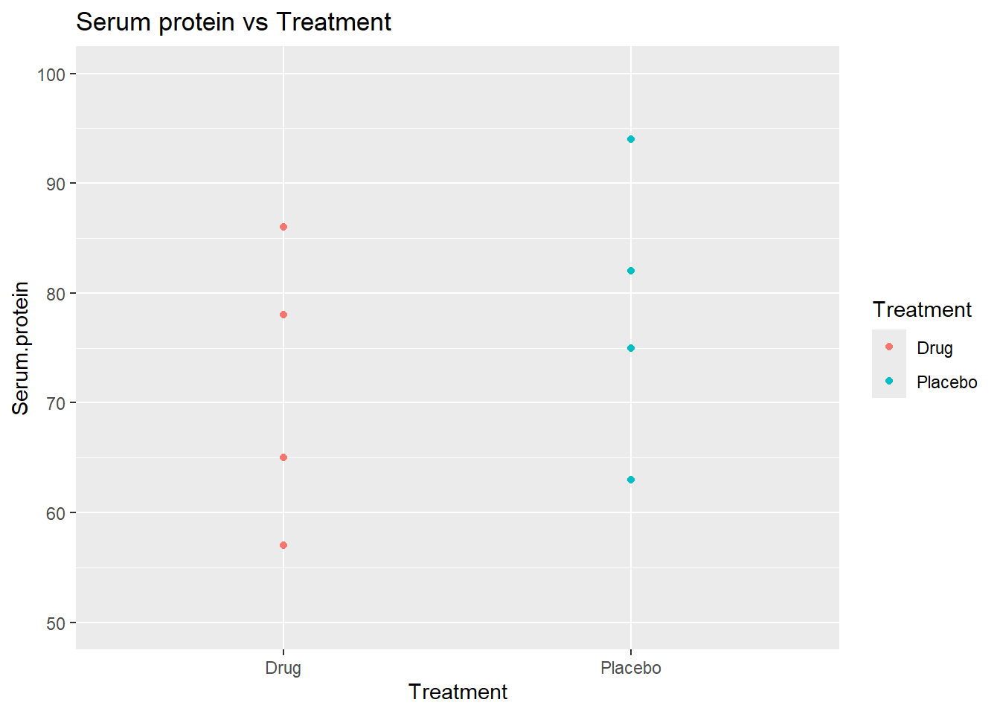
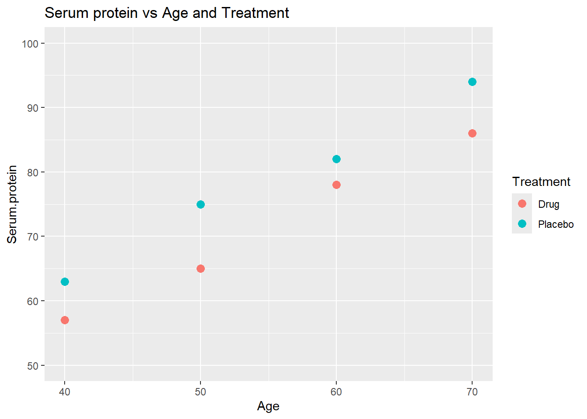
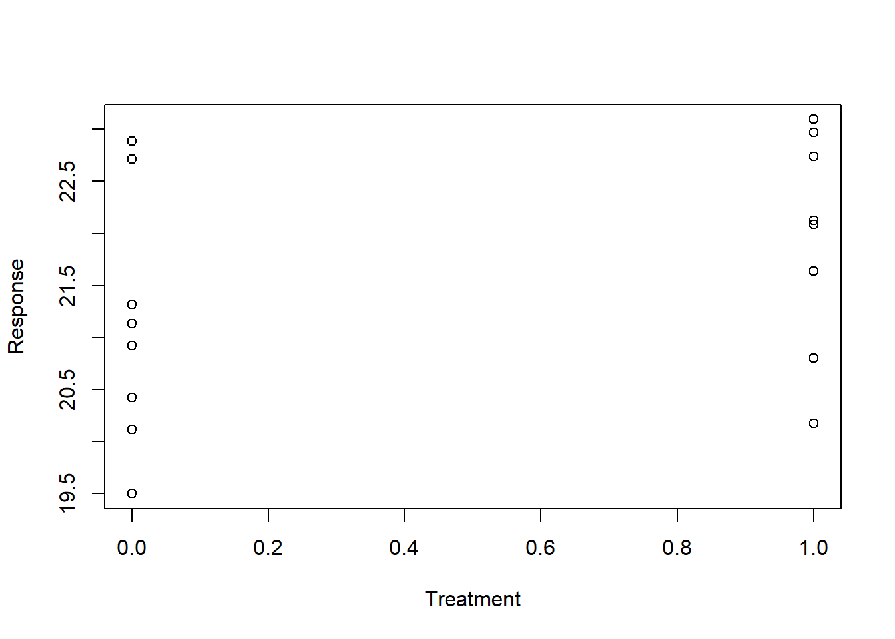
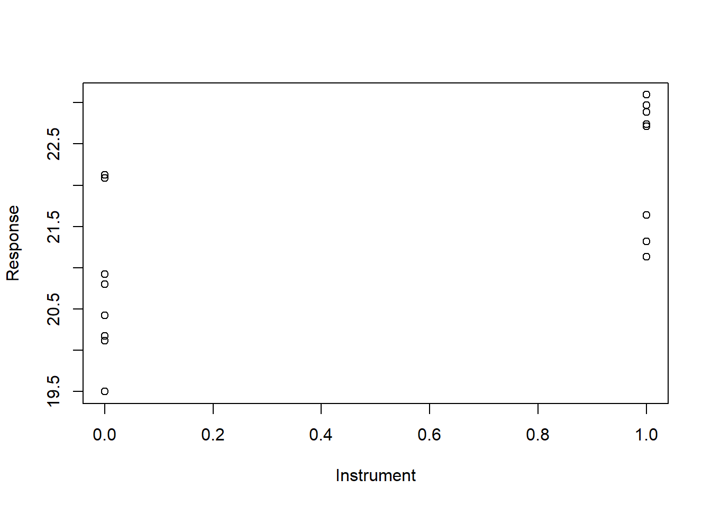
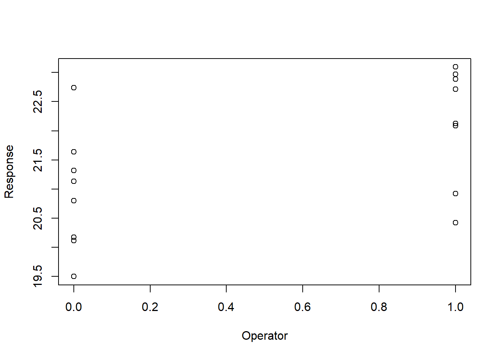

# Load required libraries
library(ggplot2)
library(car)11 Balancing variables across treatment groups is not sufficient to get best p-values
You may have been given this advice by a well-intentioned collaborator:
“If the variables that affect the response are balanced across the treatment groups, then you don’t need to include those variables in your analysis. You can do the analysis using a t-test. It won’t affect your power or p-values. There is no benefit from using multiple regression or analysis of variance.”
These statements are not correct. If you want good p-values and good power you should include variables that affect the response in your regression and ANOVA analyses, even if they are balanced across treatment groups.
I’ll show you a couple of short examples first, skipping over some details. Then, if you want to learn more, the rest of this chapter gives details of the examples, including complete R code and the data sets.
11.1 Short example 1: Testing a treatment when the response is also affected by patient’s age.
We wish to know if a drug affects a particular serum protein. The serum protein is known to change with age. Here is a data set.
# Generate a data set "protein.data"
# Serum protein vs Age and Treatment
protein.data = tibble::tribble(
~Subject, ~Age, ~Treatment, ~Serum.protein,
1, 40, "Placebo", 63,
2, 40, "Drug", 57,
3, 50, "Placebo", 75,
4, 50, "Drug", 65,
5, 60, "Placebo", 82,
6, 60, "Drug", 78,
7, 70, "Placebo", 94,
8, 70, "Drug", 86
)Here is a plot showing the response (serum protein), patient age and treatment.
graph.1 = ggplot(protein.data, aes(y=Serum.protein, x=Age, color=Treatment)) +
geom_point(size=3) +
ggtitle("Serum protein vs Age and Treatment") +
ylim(50, 100)
plot(graph.1)
Notice that, at each age (40, 50, 60, and 70), one subject gets the drug, and one subject gets the placebo. So, age is perfectly balanced between the two treatment groups.
First, analyze the data using a t-test, ignoring age.
t.test(Serum.protein ~ Treatment, data=protein.data, var.equal=TRUE)
Two Sample t-test
data: Serum.protein by Treatment
t = -0.76301, df = 6, p-value = 0.4744
alternative hypothesis: true difference in means between group Drug and group Placebo is not equal to 0
95 percent confidence interval:
-29.44855 15.44855
sample estimates:
mean in group Drug mean in group Placebo
71.5 78.5 The t-test gives us p = 0.47. According to this analysis, the drug has no effect on the serum protein. Details for this example are given below.
Next, analyze the data using a multiple regression model that includes both treatment and age as explanatory variables. The regression analysis gives us p = 0.000917 for treatment.
protein.lm = lm(Serum.protein ~ Treatment + Age, data=protein.data)
summary(protein.lm)
Call:
lm(formula = Serum.protein ~ Treatment + Age, data = protein.data)
Residuals:
1 2 3 4 5 6 7 8
-0.5 0.5 1.5 -1.5 -1.5 1.5 0.5 -0.5
Coefficients:
Estimate Std. Error t value Pr(>|t|)
(Intercept) 16.50000 2.55930 6.447 0.001335 **
TreatmentPlacebo 7.00000 1.00000 7.000 0.000917 ***
Age 1.00000 0.04472 22.361 3.32e-06 ***
---
Signif. codes: 0 '***' 0.001 '**' 0.01 '*' 0.05 '.' 0.1 ' ' 1
Residual standard error: 1.414 on 5 degrees of freedom
Multiple R-squared: 0.991, Adjusted R-squared: 0.9874
F-statistic: 274.5 on 2 and 5 DF, p-value: 7.738e-06The multiple regression model that includes both treatment and age as explanatory variables gives p = 0.0009 for Treatment.
Which do you prefer?
- T-test p = 0.47 for treatment, not controlling for age.
- Regression p = 0.000917 for treatment after controlling for age.
Consider again the advice:
“As long as the variables that affect the response are balanced across the treatment groups, then you don’t need to include those variables in your analysis. You can do the analysis using a t-test. It won’t affect your power or p-values.”
Clearly, the advice is nonsense. Regardless of how famous the professor is who gives you this advice.
11.2 Short example 2: Adjusting for 2 or more variables that affect the response.
In this example we’ll see how to adjust for two nuisance variables that affect the response, along with the treatment. The same method applies to adjusting for more than two explanatory variables.
We perform an experiment to test the effect of a treatment on a response. Unfortunately, we also have two nuisance variables, Operator and Instrument, that we suspect are affecting the measured response that is reported.
Here is the experiment.2.data. Notice that the two Instruments are perfectly balanced across the Treatment groups. The two Operators are also perfectly balanced across the Treatment groups.
set.seed(100) # set.seed makes rnorm reproducible.
Treatment = c(rep(0, 8), rep(1, 8))
Instrument = c(rep(c(0, 1),8))
Operator = c(rep(c(0, 0, 1, 1),4))
Response = 20 + Treatment + Instrument + Operator + rnorm(n=16)
experiment.2.data = data.frame(Treatment = Treatment, Instrument =Instrument,
Operator = Operator , Response= Response)
experiment.2.data Treatment Instrument Operator Response
1 0 0 0 19.49781
2 0 1 0 21.13153
3 0 0 1 20.92108
4 0 1 1 22.88678
5 0 0 0 20.11697
6 0 1 0 21.31863
7 0 0 1 20.41821
8 0 1 1 22.71453
9 1 0 0 20.17474
10 1 1 0 21.64014
11 1 0 1 22.08989
12 1 1 1 23.09627
13 1 0 0 20.79837
14 1 1 0 22.73984
15 1 0 1 22.12338
16 1 1 1 22.97068First, we’ll analyze the data using a t-test, ignoring instrument and operator.
with(experiment.2.data, t.test(Response ~ Treatment, var.equal=TRUE))
Two Sample t-test
data: Response by Treatment
t = -1.483, df = 14, p-value = 0.1602
alternative hypothesis: true difference in means between group 0 and group 1 is not equal to 0
95 percent confidence interval:
-2.026618 0.369678
sample estimates:
mean in group 0 mean in group 1
21.12569 21.95416 The t-test gives us p = 0.16. According to this analysis, the treatment has no effect on the response.
Next, we’ll analyze the data using a multiple regression model that includes treatment, instrument, and operator as explanatory variables.
with(experiment.2.data,
summary(lm(Response ~ Treatment + Instrument + Operator)))
Call:
lm(formula = Response ~ Treatment + Instrument + Operator)
Residuals:
Min 1Q Median 3Q Max
-0.54779 -0.27434 -0.00584 0.30379 0.62598
Coefficients:
Estimate Std. Error t value Pr(>|t|)
(Intercept) 19.7406 0.2003 98.574 < 2e-16 ***
Treatment 0.8285 0.2003 4.137 0.00138 **
Instrument 1.5447 0.2003 7.714 5.45e-06 ***
Operator 1.2254 0.2003 6.119 5.19e-05 ***
---
Signif. codes: 0 '***' 0.001 '**' 0.01 '*' 0.05 '.' 0.1 ' ' 1
Residual standard error: 0.4005 on 12 degrees of freedom
Multiple R-squared: 0.9048, Adjusted R-squared: 0.881
F-statistic: 38.02 on 3 and 12 DF, p-value: 2.092e-06The regression analysis gives us p = 0.00138 for treatment. It also gives us p < 0.05 for instrument and operator, indicating that there are significant differences in the measured response caused by variability between the operators and variability between the instruments. A detailed presentation of this example is given below.
Which do you prefer?
- T-test p = 0.16, ignoring other variables.
- Regression p = 0.00138, controlling for other variables.
If you want good p-values, include variables that affect the response in your analyses, even if those variables are perfectly balanced across your treatment groups.
If you want ways to quickly and efficiently identify nuisance variables that are affecting a response, see the chapter “Rescue a failed experiment using fractional factorial designs”.
11.3 Detailed presentation for example 1
We wish to know if a drug affects a serum protein. The serum protein is known to change with age. We have the following data.
protein.data# A tibble: 8 × 4
Subject Age Treatment Serum.protein
<dbl> <dbl> <chr> <dbl>
1 1 40 Placebo 63
2 2 40 Drug 57
3 3 50 Placebo 75
4 4 50 Drug 65
5 5 60 Placebo 82
6 6 60 Drug 78
7 7 70 Placebo 94
8 8 70 Drug 86We load the library(car) to use the Anova() function instead of the default anova() function. The car Anova() function avoids problems that can occur with correlated explanatory variables. Notice the upper case A starting the Anova() function.
library(car)Plot the data.
ggplot(protein.data, aes(y=Serum.protein, x=Treatment)) + geom_point() +
ggtitle("Serum protein vs Treatment") + ylim(50, 100) +
geom_point(aes(color=Treatment))
Perform a t-test.
t.test(Serum.protein ~ Treatment, data=protein.data, var.equal=TRUE)
Two Sample t-test
data: Serum.protein by Treatment
t = -0.76301, df = 6, p-value = 0.4744
alternative hypothesis: true difference in means between group Drug and group Placebo is not equal to 0
95 percent confidence interval:
-29.44855 15.44855
sample estimates:
mean in group Drug mean in group Placebo
71.5 78.5 The p-value is 0.4744, indicating that the drug has no effect on the serum protein.
However, if we plot serum protein values by age, we see an important pattern. Here is a plot showing serum protein with both age and treatment.
graph.1
The plot indicates that, within each age group, the drug is having an effect. But the t-test cannot detect that effect, because of the additional variance caused by age.
Multiple regression model including both Age and Treatment
The better method is to include both age and treatment as explanatory variables in the analysis, using either ANOVA or linear regression. Doing so removes the otherwise unexplained variability caused by age. Here is the result using lm and the Anova() function from library(car).
Anova(lm(Serum.protein ~ Treatment + Age, data = protein.data))Anova Table (Type II tests)
Response: Serum.protein
Sum Sq Df F value Pr(>F)
Treatment 98 1 49 0.0009167 ***
Age 1000 1 500 3.324e-06 ***
Residuals 10 5
---
Signif. codes: 0 '***' 0.001 '**' 0.01 '*' 0.05 '.' 0.1 ' ' 1The regression analysis gives us p = 0.000917 for treatment.
11.4 Detailed presentation for example 2: How to adjust for two or more variables.
In this example we adjust for two explanatory variables in addition to the treatment. The same principles apply to adjust for more than two explanatory variables.
We have 4 variables in the data:
- a Response variable
- a Treatment variable
- Operator, a nuisance variable that also affects the response.
- Instrument, a nuisance variable that also affects the response.
experiment.2.data
Treatment Instrument Operator Response
1 0 0 0 19.49781
2 0 1 0 21.13153
3 0 0 1 20.92108
4 0 1 1 22.88678
5 0 0 0 20.11697
6 0 1 0 21.31863
7 0 0 1 20.41821
8 0 1 1 22.71453
9 1 0 0 20.17474
10 1 1 0 21.64014
11 1 0 1 22.08989
12 1 1 1 23.09627
13 1 0 0 20.79837
14 1 1 0 22.73984
15 1 0 1 22.12338
16 1 1 1 22.97068Notice the perfect balance of instrument and operator across the treatment groups. Let’s look at some plots of response versus Treatment, Instrument, and Operator.
with(experiment.2.data, plot(Response ~ Treatment))
with(experiment.2.data, plot(Response ~ Instrument))
with(experiment.2.data, plot(Response ~ Operator))
The graphs suggest that Treatment, Operator, and Instrument all affect the response.
First, we’ll try a t-test of Response ~ Treatment with no adjustment for Instrument or Operator.
with(experiment.2.data, t.test(Response ~ Treatment, var.equal=TRUE))
Two Sample t-test
data: Response by Treatment
t = -1.483, df = 14, p-value = 0.1602
alternative hypothesis: true difference in means between group 0 and group 1 is not equal to 0
95 percent confidence interval:
-2.026618 0.369678
sample estimates:
mean in group 0 mean in group 1
21.12569 21.95416 The t-test gives us p = 0.16 for treatment, indicating that it has no effect on the response.
Next, let’s do a multiple regression model including Response ~ Treatment + Instrument + Operator.
with(experiment.2.data,
summary(lm(Response ~ Treatment + Instrument + Operator)))
Call:
lm(formula = Response ~ Treatment + Instrument + Operator)
Residuals:
Min 1Q Median 3Q Max
-0.54779 -0.27434 -0.00584 0.30379 0.62598
Coefficients:
Estimate Std. Error t value Pr(>|t|)
(Intercept) 19.7406 0.2003 98.574 < 2e-16 ***
Treatment 0.8285 0.2003 4.137 0.00138 **
Instrument 1.5447 0.2003 7.714 5.45e-06 ***
Operator 1.2254 0.2003 6.119 5.19e-05 ***
---
Signif. codes: 0 '***' 0.001 '**' 0.01 '*' 0.05 '.' 0.1 ' ' 1
Residual standard error: 0.4005 on 12 degrees of freedom
Multiple R-squared: 0.9048, Adjusted R-squared: 0.881
F-statistic: 38.02 on 3 and 12 DF, p-value: 2.092e-06In the output, the column labeled “Pr(>|t|)” gives the p-values. The multiple regression analysis gives p = 0.00138 for treatment. It also gives p < 0.05 for instrument and operator, indicating that there are significant differences in the measured response caused by variability between the operators and variability between the instruments. It would probably be a good idea to get the operators together to agree on the protocol, and to get the two instruments calibrated.
Which do you prefer?
- T-test p = 0.16, ignoring other variables.
- Regression p = 0.00138, controlling for other variables.